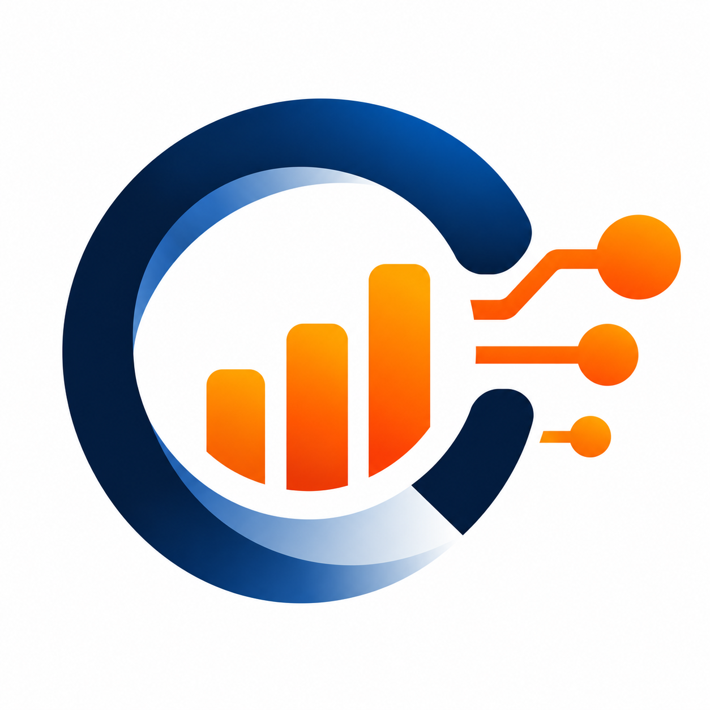

Tempo Scan · Commercial Intelligence
Ask AI improvements — accurate metrics, continuous sessions, decision-ready answers
Executive summary of enhancements · October 2026

-
Consistent metrics & business definitions The assistant selects KPIs using Tempo terminology (sell-in, sell-out, DC stock, service level, operations) so numbers align with how teams read reports.
-
Continuous conversation in one session Follow-ups reuse prior context — a DC drill-down, top products, or “why did that month drop” without starting from scratch.
-
Cross-domain business comparisons Questions that compare flows or domains route to standardized analyses, not ad-hoc calculations.
-
Clarification when KPIs are ambiguous One question, two metrics? The system asks for a quick choice (PO fulfillment vs billing, picking vs unloading).
-
Cleaner analysis for decision-making Direct summary, tables when needed, hypotheses & recommendations; charts only when rankings or trends truly help.